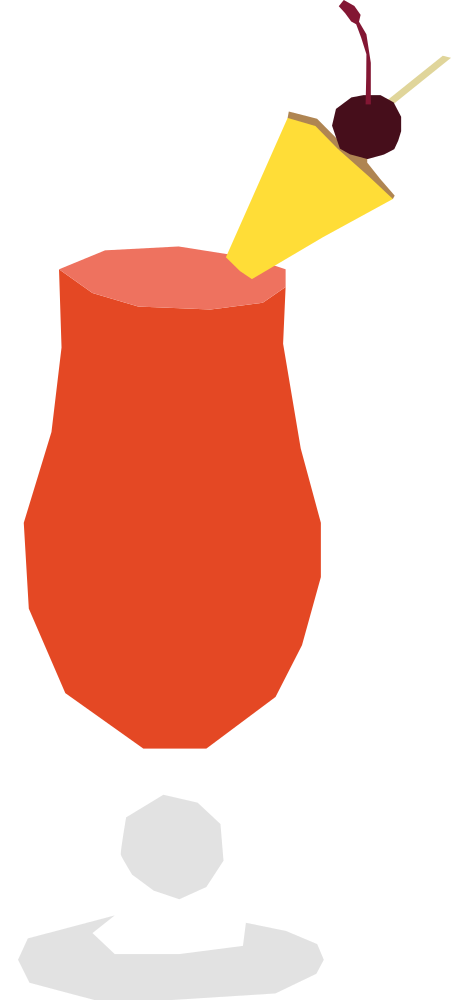

¿Qué pasa entre los jóvenes?
Creado hacia 1915 por el bartender Ngiam Tong Boon en el legendario Long Bar del hotel Raffles. Fue diseñado originalmente para que las mujeres de la época colonial pudieran beber alcohol en público disfrazado de jugo de frutas, gracias a su color rosado.
RECETA
- 30 ml gin
- 15 ml licor de cereza
- 7.5 ml Cointreau
- 7.5 ml Benedictine
- 10 ml granadina
- 15 ml jugo de lima
- 60 ml jugo de piña
- 15 ml agua mineral con gas
- 1 golpe de Angostura bitters
- Hielo
- Gajo de piña
- Una cereza
- Agrega el gin, licor de cereza, Cointreau, Benedictine, granadina, jugo de lima, jugo de piña y Angostura a una coctelera con hielo.
- Agita bien y cuela en un vaso con hielo.
- Completa con agua mineral con gas y mezcla suavemente.
- Decora con un gajo de piña y una cereza
Vaso: Copa hurricane.